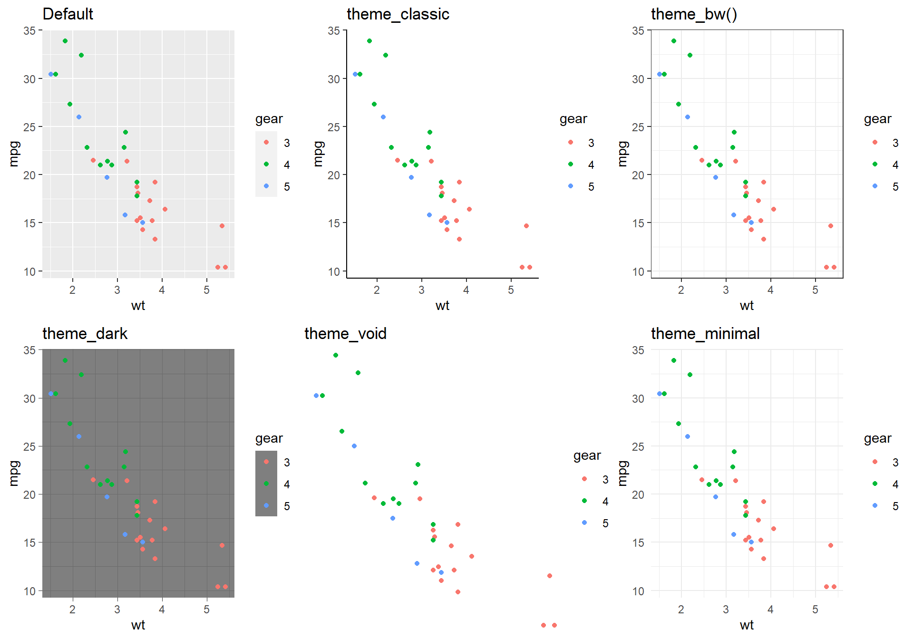
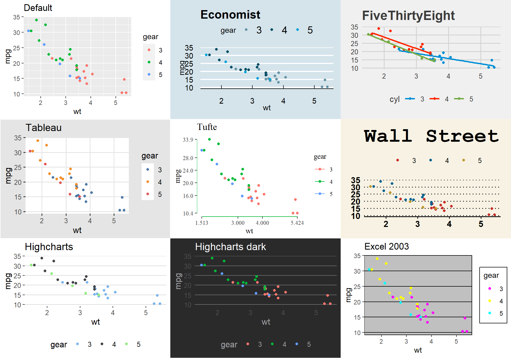
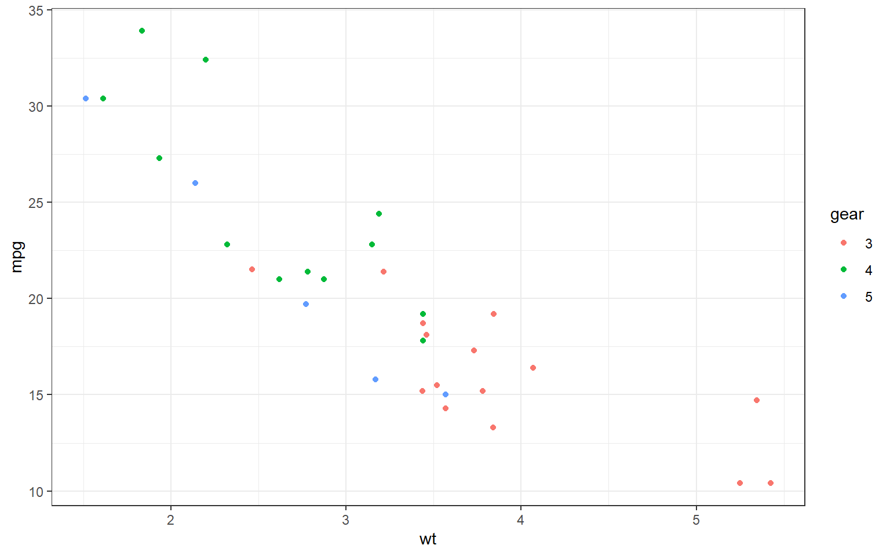
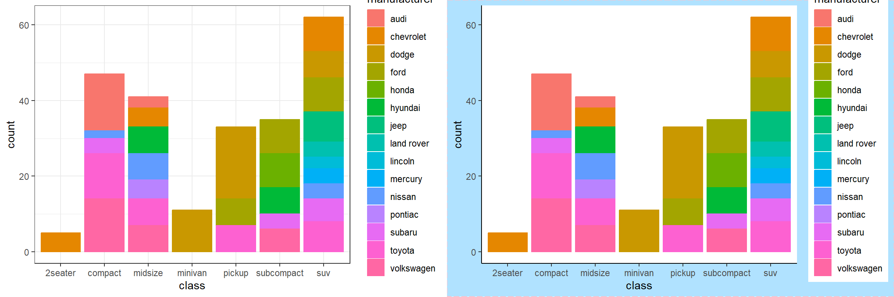
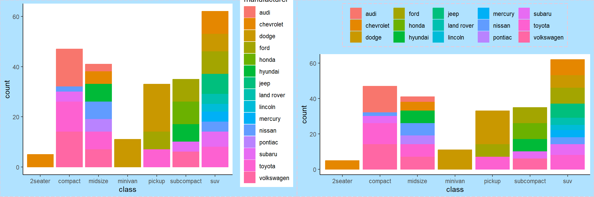
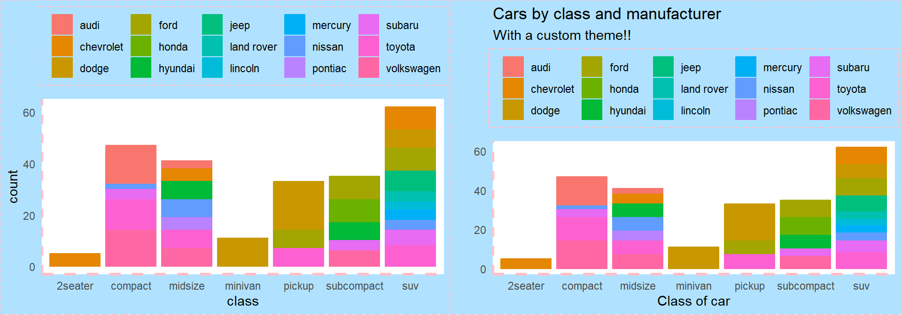
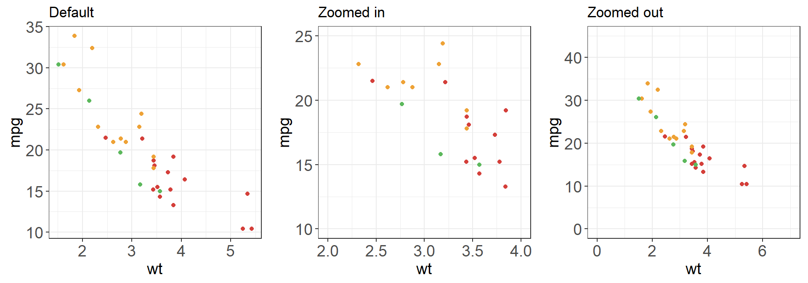

Data Visualization
Using ggplot2
POLISHING PLOTS
Visual Appearance
Built-In Themes
Other Themes: ggthemes a ggplot2 extension

Setting Themes
You can globally set a theme with the theme_set() function:
theme_set(theme_bw()) #<<
ggplot(mtcars, aes(x = wt, y = mpg, colour = gear)) +
geom_point()
Elements in a theme
The function theme() is used to control non-data parts of the graph including:
- Line elements: axis lines, minor and major grid lines, plot panel border, axis ticks background color, etc.
- Text elements: plot title, axis titles, legend title and text, axis tick mark labels, etc.
- Rectangle elements: plot background, panel background, legend background, etc.
There is a specific function to modify each of these three elements :
element_line()to modify the line elements of the themeelement_text()to modify the text elementselement_rect()to change the appearance of the rectangle elementselement_blank()to draw nothing and assign no space
Note: rel() is used to specify sizes relative to the parent, margins() is used to specify the margins of elements.
Modifying a plot
p1 <- ggplot(mpg) +
geom_bar(aes(x = class, colour = manufacturer, fill = manufacturer) )
p2 <- p1 + #<<
theme_classic() +
## modify plot background
theme(plot.background = element_rect(fill = "lightskyblue1",colour = "pink",size = 0.5, linetype = "longdash")) #<<
Plot Legends
p3 <- p2 +
theme(
### move and modify legend
legend.title = element_blank(), #<<
legend.position = "top", #<<
legend.key = element_rect(fill = "lightskyblue1", color = "lightskyblue1"), #<<
legend.background = element_rect( fill = "lightskyblue1",color = "pink", size = 0.5,linetype = "longdash") #<<
)
Modifying Axes
p4 <- p3 + theme(
### remove axis ticks
axis.ticks=element_blank(), #<<
### modify axis lines
axis.line.y = element_line(colour = "pink", size = 1, linetype = "dashed"),#<<
axis.line.x = element_line(colour = "pink", size = 1.2, linetype = "dashed") #<<
)
Plot Labels
Can be modified in several ways: - labs(), xlab(), ylab(), ggtitle() - You can also set axis and legend labels in the individual scales (using the first argument, the name) e.g. scale_x_continuous() .
p5 <- p4 +
labs(x = "Class of car", #<<
y = "", #<<
title = "Cars by class and manufacturer", #<<
subtitle = "With a custom theme!!") #<<
Zooming
p <- ggplot(mtcars, aes(x = wt, y = mpg, colour = gear)) +
geom_point()
p_zoom_in <- p +
xlim(2, 4) + #<<
ylim(10, 25) #<<
p_zoom_out <- p +
scale_x_continuous(limits = c(0,7)) + #<<
scale_y_continuous(limits = c(0, 45)) #<<
Interactive graphics
Plotly
p <- ggplot(mtcars, aes(x = wt, y = mpg, colour = gear)) +
geom_point() +
scale_color_locuszoom()
library(plotly) #<<
ggplotly(p) #<<Saving graphics
Saving your Work
We can save the results of a plot to a file (as an image) using the ggsave() function:
p1 <- ggplot(mtcars, aes(x = wt, y = mpg, colour = gear)) +
geom_point()
ggsave("mpg_by_wt.pdf", plot = p1) #<<Your Turn
- Create a scatterplot of
bill lengthversusbill widthfrom thepenguinsand color by species. - Use the black and white theme
- Clean up axis labels and include an informative title.
- Capitalize legend title and change the color palette from default.
- Move the legend to the bottom and set aspect ratio to 1.
- Save your plot to a pdf file and open it in a pdf viewer.
- Save a png of the same scatterplot.
- Embed the png into MS word or another editor.
install.packages("palmerpenguins")
data(penguins, package = "palmerpenguins")
head(penguins)